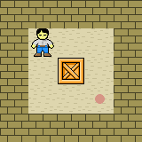
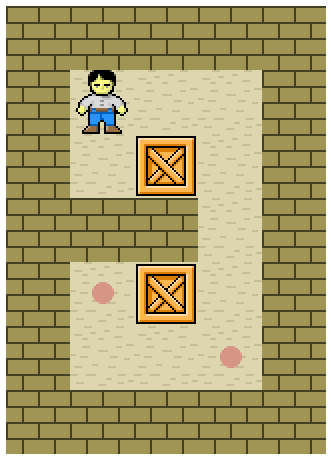
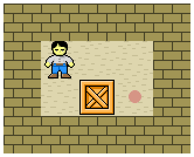
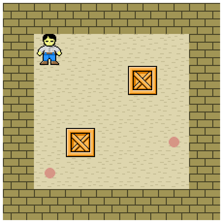

6 Sokoban
| (require planning/examples/sokoban) | package: planning |
Sokoban is a puzzle game in which the player must push crates around a warehouse, trying to put them in storage locations. It was created in 1981 and has since found a home in the AI research community as a useful problem domain for testing automated planners.
The Sokoban world is a rectangular grid containing walls, crates, a player, and storage locations. The goal is to push the crates to the storage locations. The player can move around the world and push crates up, down, left, and right, but only if the crate isn’t blocked by a wall or another crate.
(define state (sokoban-level (space 1 1) player (space 2 2) crate (space 3 3) storage-location #:width 5 #:height 5)) (define problem (hash-planning-problem #:state state #:actions (sokoban-possible-actions state) #:goal sokoban-goal))
> (hash-visualize-plan! problem #:draw-state-with sokoban-pict) 
procedure
(sokoban-object? v) → boolean?
v : any/c
value
value
value
value
value
value
procedure
(sokoban-level s object ... ... #:width width #:height height) → (hash/c space? sokoban-object?) s : space? object : sokoban-object? width : exact-positive-integer? height : exact-positive-integer?
> (sokoban-pict (sokoban-level (space 1 1) player (space 1 3) wall (space 2 3) wall (space 2 2) crate (space 3 5) storage-location (space 2 4) crate (space 1 4) storage-location #:width 5 #:height 7)) 
procedure
(sokoban-applicable-actions state) → (set/c hash-action?)
state : (hash/c space? sokoban-object?)
(define state (sokoban-level (space 1 1) player (space 2 2) crate (space 3 2) storage-location #:width 5 #:height 4))
> (sokoban-pict state) 
> (set-count (sokoban-applicable-actions state)) 2
procedure
(sokoban-possible-actions initial-state) → (set/c hash-action?)
initial-state : (hash/c space? sokoban-object?)
The set of possible actions returned is an optimistic estimate. Every possible action is returned, but some impossible actions may also be returned. An estimate is returned because computing the exact set of possible actions can be complex and prohibitively expensive.
(define state (sokoban-level (space 1 1) player (space 2 2) crate (space 3 2) storage-location #:width 5 #:height 4))
> (sokoban-pict state) > (set-count (sokoban-possible-actions state)) 480
value
sokoban-goal : hash-goal?
= (hash-goal #:obstructing-values (set crate))
procedure
(sokoban-pict state) → pict?
state : (hash/c space? sokoban-object?)
> (sokoban-pict (sokoban-level (space 1 1) player (space 2 4) crate (space 4 2) crate (space 1 5) storage-location (space 5 4) storage-location #:width 7 #:height 7)) 